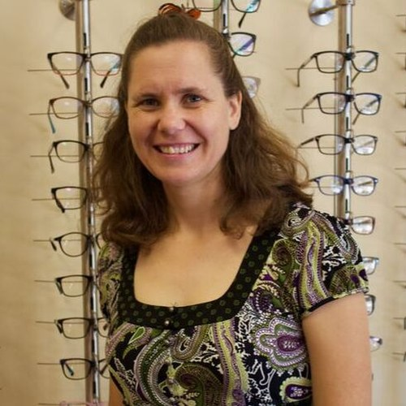

Nuestro Consultorio
Nuestro equipo de doctores, formados en UC Berkeley, trabaja con usted para cuidar la salud de sus ojos y ayudarle a lograr su mejor visión.

Payam Zarehbin Irani, OD
El Dr. Irani sirve al área de Fruitvale desde 2004. Además de exámenes de rutina y recetas para lentes y lentes de contacto, ofrece tratamiento y manejo de muchas enfermedades de los ojos, y está totalmente certificado para el tratamiento completo del glaucoma. Ha dado pláticas sobre la salud de los ojos en el centro local para personas mayores, ha hecho exámenes gratuitos para adultos mayores y ha sido doctor voluntario en las clínicas móviles de VSP. Se graduó de la Escuela de Optometría de UC Berkeley en 2002.
El Dr. Irani creó un consultorio totalmente bilingüe (español/inglés). Antes de abrirlo, trabajó con dos oftalmólogos — uno especializado en el tratamiento del glaucoma y otro en cirugía láser — hizo exámenes de la vista en escuelas, y trabajó en ópticas comerciales y consultorios privados. Ha combinado lo mejor de todas estas experiencias para servirle mejor, tanto en el examen como en ayudarle a encontrar los armazones y lentes que van con su vida y su visión.

Nancy Luu, OD
La Dra. Luu brinda un cuidado excepcional a nuestros pacientes desde 2015. Nacida en Oakland, empezó a trabajar como óptica en Albany en 2006, después fue aceptada en el programa de optometría de UC Berkeley y se graduó en 2011. Completó parte de su formación clínica en el Alameda County Medical Center y ha participado en varios viajes como voluntaria a América Latina para dar cuidado de los ojos a comunidades necesitadas. Está certificada para tratar el glaucoma además de muchas otras enfermedades de los ojos.

Patricia Hernandez, OD
La Dra. Hernandez tiene más de 30 años de experiencia profesional dando cuidado completo de los ojos a comunidades diversas del Área de la Bahía. Recibió su Doctorado en Optometría de UC Berkeley y una licenciatura en Bioquímica de Cal Poly San Luis Obispo. Ha trabajado en muchos tipos de consultorios, especialmente en prácticas oftalmológicas, lo que amplió su experiencia en enfermedades de los ojos. Su interés principal es tratar a pacientes con glaucoma, y está certificada para tratar el glaucoma y otras enfermedades oculares.
En Fruitvale Optometry se siente como en casa ayudando a un grupo diverso de pacientes — desde recetas únicas hasta enfermedades que nunca han sido tratadas. Le da gran satisfacción ser la primera doctora en ayudarle a entender sus problemas de los ojos.

Genesta Zarehbin Irani — Gerente del Consultorio
Genesta se graduó de Pacific Lutheran University con una licenciatura en antropología social y desarrollo internacional en 2001, y trabajó en varios servicios sociales antes de cofundar Fruitvale Optometry con el Dr. Irani en 2004. Ella apoya y entrena a nuestro personal para asegurar que usted reciba el mejor servicio posible. Si tiene una duda que nuestro personal no puede resolver, Genesta usualmente está disponible por las mañanas entre semana y siempre por teléfono.
Nuestro personal
Nuestro consultorio cuenta con el apoyo dedicado de un equipo de ópticos, técnicos ópticos, técnicos de laboratorio y especialistas en aseguranzas. Como consultorio comunitario, estamos comprometidos a contratar dentro de nuestra propia comunidad. Todo nuestro personal es totalmente bilingüe en español e inglés. Muchos llegaron primero como pacientes, y todos empezaron sus carreras ópticas en nuestra oficina.